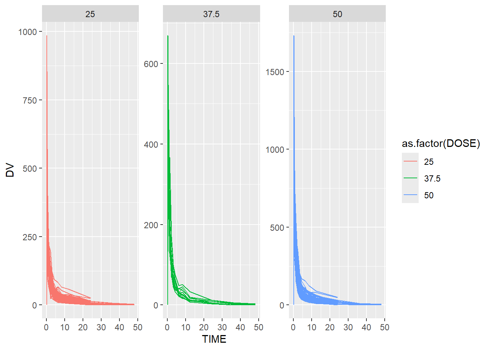
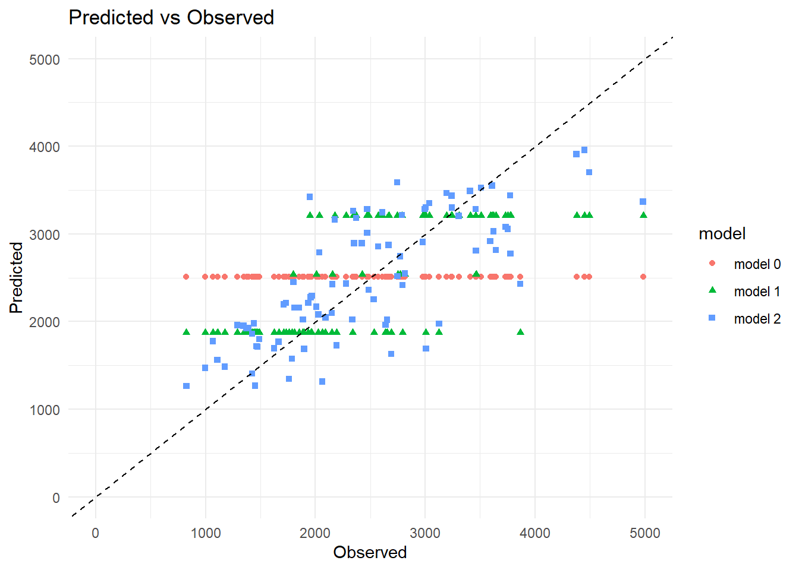
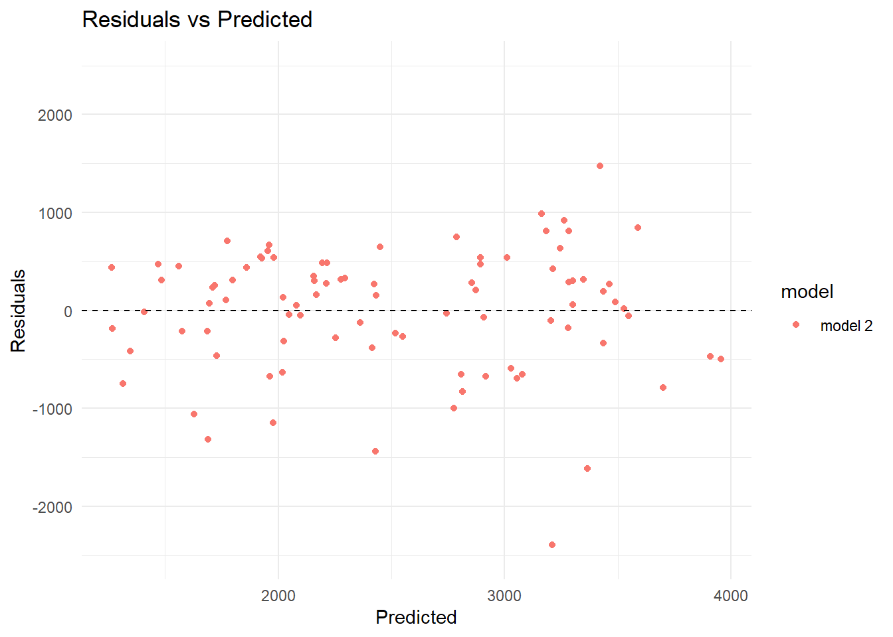
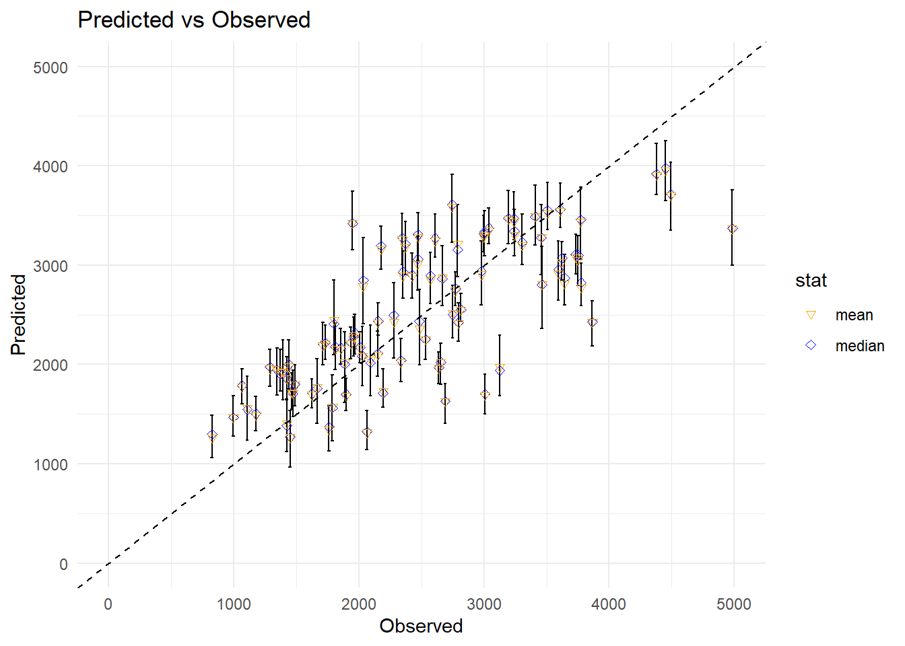

#The thing that kept tripping me up here was my own lack of R coding ability. So I went through this exercise again and worked it out using the solutions provided by Dr. Handel. The result is that I learned a bit about how to code this stuff.#I went ahead took a peek at the solutions that Dr. Handel posted. Katie pointed out that since I had already blown the assignment and since I couldn't figure it out myself that I should probably stop being stubborn (her exact phrase was "being a bone headed stubborn dumb-***"... Love you, Katie!) and peek. #Call a bunch of libraries.suppressPackageStartupMessages(library(tidyverse))
Warning: package 'tidyverse' was built under R version 4.3.3
Warning: package 'ggplot2' was built under R version 4.3.3
Warning: package 'tidyr' was built under R version 4.3.3
#Data processing.#Load excel data filedata_location <- here::here("Mavoglurant_A2121_nmpk.csv")Mav_data <-read.csv(data_location)#Save a rds versionsave_data_location <- here::here("mav_data.rds")saveRDS(Mav_data, file = save_data_location)
library(ggplot2)#Initial Data Explore. summary(Mav_data)
ID CMT EVID EVI2
Min. :793.0 Min. :1.000 Min. :0.00000 Min. :0.0000
1st Qu.:832.0 1st Qu.:2.000 1st Qu.:0.00000 1st Qu.:0.0000
Median :860.0 Median :2.000 Median :0.00000 Median :0.0000
Mean :858.8 Mean :1.926 Mean :0.07394 Mean :0.1613
3rd Qu.:888.0 3rd Qu.:2.000 3rd Qu.:0.00000 3rd Qu.:0.0000
Max. :915.0 Max. :2.000 Max. :1.00000 Max. :4.0000
MDV DV LNDV AMT
Min. :0.00000 Min. : 0.00 Min. :0.000 Min. : 0.000
1st Qu.:0.00000 1st Qu.: 23.52 1st Qu.:3.158 1st Qu.: 0.000
Median :0.00000 Median : 74.20 Median :4.306 Median : 0.000
Mean :0.09373 Mean : 179.93 Mean :4.085 Mean : 2.763
3rd Qu.:0.00000 3rd Qu.: 283.00 3rd Qu.:5.645 3rd Qu.: 0.000
Max. :1.00000 Max. :1730.00 Max. :7.456 Max. :50.000
TIME DOSE OCC RATE
Min. : 0.000 Min. :25.00 Min. :1.000 Min. : 0.00
1st Qu.: 0.583 1st Qu.:25.00 1st Qu.:1.000 1st Qu.: 0.00
Median : 2.250 Median :37.50 Median :1.000 Median : 0.00
Mean : 5.851 Mean :37.37 Mean :1.378 Mean : 16.55
3rd Qu.: 6.363 3rd Qu.:50.00 3rd Qu.:2.000 3rd Qu.: 0.00
Max. :48.217 Max. :50.00 Max. :2.000 Max. :300.00
AGE SEX RACE WT
Min. :18.0 Min. :1.000 Min. : 1.000 Min. : 56.60
1st Qu.:26.0 1st Qu.:1.000 1st Qu.: 1.000 1st Qu.: 73.30
Median :31.0 Median :1.000 Median : 1.000 Median : 82.60
Mean :32.9 Mean :1.128 Mean : 7.415 Mean : 83.16
3rd Qu.:40.0 3rd Qu.:1.000 3rd Qu.: 2.000 3rd Qu.: 90.60
Max. :50.0 Max. :2.000 Max. :88.000 Max. :115.30
HT
Min. :1.520
1st Qu.:1.710
Median :1.780
Mean :1.762
3rd Qu.:1.820
Max. :1.930
p1 <- Mav_data %>%ggplot() +geom_line( aes( x = TIME, y = DV, group =as.factor(ID), color =as.factor(DOSE)) ) +facet_wrap( ~ DOSE, scales ="free_y")plot(p1)

p2 <-ggplot(Mav_data, aes(x=TIME, y=DV)) +geom_line( aes( x = TIME, y = DV, group =as.factor(ID), color =as.factor(DOSE)) ) +facet_wrap( ~ DOSE, scales ="free_y")plot(p2)
#Keeping only OCC=1.OCC_Mav1 <- Mav_data %>%filter(OCC ==1)OCC_Mav1 <- OCC_Mav1 %>%filter(OCC ==1)OCC_Mav1 <-na.omit(OCC_Mav1)DV_Mav1 <- OCC_Mav1 %>%filter(DV >0)DV_Mav1 <- DV_Mav1 %>%filter(DV >0)DV_Mav1 <-na.omit(DV_Mav1)df_Y <- OCC_Mav1 %>%filter(TIME >0) %>%group_by(ID) %>%summarise(Y=sum(DV))df_time0 <- OCC_Mav1 %>%filter(TIME ==0)Combo_Mav1 <-left_join(df_Y, df_time0, by ="ID")Combo_Mav1 <- Combo_Mav1 %>%select(Y,DOSE,AGE,SEX,RACE,WT,HT)Combo_Mav1 <- Combo_Mav1 %>%mutate(RACE =ifelse(RACE %in%c(7,88), 3, RACE ))#HT is in meters, WT is in kilograms.Combo_Mav1$BMI <- Combo_Mav1$WT / ((Combo_Mav1$HT)^2) #SEX as a number/factorCombo_Mav1 <- Combo_Mav1 %>%mutate(SEX =ifelse(SEX ==1, "M", "F" ),SEX =factor(SEX) )Combo_Mav1 <- Combo_Mav1 %>%mutate(RACE =factor(RACE) )print(Combo_Mav1)
# A tibble: 120 × 8
Y DOSE AGE SEX RACE WT HT BMI
<dbl> <dbl> <int> <fct> <fct> <dbl> <dbl> <dbl>
1 2691. 25 42 M 2 94.3 1.77 30.1
2 2639. 25 24 M 2 80.4 1.76 26.0
3 2150. 25 31 M 1 71.8 1.81 21.9
4 1789. 25 46 F 1 77.4 1.65 28.4
5 3126. 25 41 F 2 64.3 1.56 26.4
6 2337. 25 27 M 2 74.1 1.83 22.1
7 3007. 25 23 M 1 87.9 1.85 25.7
8 2796. 25 20 M 3 61.9 1.73 20.7
9 3866. 25 23 M 2 65.3 1.65 24.0
10 1762. 25 28 M 1 104. 1.84 30.6
# ℹ 110 more rows
#Okay, that looks pretty good.
#Model Fitting# fit the linear models with Y as outcome # first model has only DOSE as predictor# second model has all variables as predictorslin_mod <-linear_reg() %>%set_engine("lm")linfit1 <- lin_mod %>%fit(Y ~ DOSE, data = Combo_Mav1)linfit2 <- lin_mod %>%fit(Y ~ ., data = Combo_Mav1)# Compute the RMSE and R squared for model 1metrics_1 <- linfit1 %>%predict(Combo_Mav1) %>%bind_cols(Combo_Mav1) %>%metrics(truth = Y, estimate = .pred)# Compute the RMSE and R squared for model 2metrics_2 <- linfit2 %>%predict(Combo_Mav1) %>%bind_cols(Combo_Mav1) %>%metrics(truth = Y, estimate = .pred)# Print the resultsprint(metrics_1)
# A tibble: 3 × 3
.metric .estimator .estimate
<chr> <chr> <dbl>
1 rmse standard 666.
2 rsq standard 0.516
3 mae standard 517.
print(metrics_2)
# A tibble: 3 × 3
.metric .estimator .estimate
<chr> <chr> <dbl>
1 rmse standard 572.
2 rsq standard 0.644
3 mae standard 443.
#Logistic Models# fit the logistic models with SEX as outcome # first model has only DOSE as predictor# second model has all variables as predictorslog_mod <-logistic_reg() %>%set_engine("glm")logfit1 <- log_mod %>%fit(SEX ~ DOSE, data = Combo_Mav1)logfit2 <- log_mod %>%fit(SEX ~ ., data = Combo_Mav1)# Compute the accuracy for model 1m1_acc <- logfit1 %>%predict(Combo_Mav1) %>%bind_cols(Combo_Mav1) %>%metrics(truth = SEX, estimate = .pred_class) %>%filter(.metric =="accuracy") # Compute the accuracy for model 2m2_acc <- logfit2 %>%predict(Combo_Mav1) %>%bind_cols(Combo_Mav1) %>%metrics(truth = SEX, estimate = .pred_class) %>%filter(.metric %in%c("accuracy"))# Print the resultsprint(m1_acc)
#Katie had not used this function before either and neither of us could figure out what the issue is. We even asked ChatGPT and good ol’ Chattie said to change “.pred_1” to “.pred = .pred_1”. That didn’t work either.
#Part 10 Material.#Okay, since I have already gotten all of my data loaded and prepped, see the data section above, I don't need to load anything up and clean it. All those steps are already done since I did the data part all at once for the models exercise and then just copied it here.#But I will set a seed!#Once again, part of this code is mine and worked (mostly the data manipulation) and part is from the key from Dr. Handel.rngseed=1234#Getting rid of RACE.Combo_Mav2 <- Combo_Mav1 %>%select(Y,DOSE,AGE,SEX,WT,HT)print(Combo_Mav2)
# A tibble: 120 × 6
Y DOSE AGE SEX WT HT
<dbl> <dbl> <int> <fct> <dbl> <dbl>
1 2691. 25 42 M 94.3 1.77
2 2639. 25 24 M 80.4 1.76
3 2150. 25 31 M 71.8 1.81
4 1789. 25 46 F 77.4 1.65
5 3126. 25 41 F 64.3 1.56
6 2337. 25 27 M 74.1 1.83
7 3007. 25 23 M 87.9 1.85
8 2796. 25 20 M 61.9 1.73
9 3866. 25 23 M 65.3 1.65
10 1762. 25 28 M 104. 1.84
# ℹ 110 more rows
#Okay, this water is a bit deep for me.set.seed(rngseed)data_split <-initial_split(Combo_Mav2, prop =3/4)# Create data frames for the two sets:train_data <-training(data_split)test_data <-testing(data_split)# record number of observations in each dataset, need that later -- This is Dr. Handel'sNtrain =nrow(train_data)Ntest =nrow(test_data)print(train_data)
# A tibble: 90 × 6
Y DOSE AGE SEX WT HT
<dbl> <dbl> <int> <fct> <dbl> <dbl>
1 3004. 50 28 M 83.2 1.74
2 1347. 25 41 M 81 1.75
3 2772. 37.5 28 M 78.3 1.72
4 2028. 25 28 F 58.9 1.58
5 2353. 50 37 M 99.1 1.78
6 826. 25 30 M 105. 1.88
7 3866. 25 23 M 65.3 1.65
8 3126. 25 41 F 64.3 1.56
9 1108. 25 48 F 79.5 1.62
10 2815. 37.5 26 M 84.5 1.77
# ℹ 80 more rows
print(test_data)
# A tibble: 30 × 6
Y DOSE AGE SEX WT HT
<dbl> <dbl> <int> <fct> <dbl> <dbl>
1 2549. 25 46 M 83 1.78
2 2353. 37.5 43 F 64.4 1.56
3 2009. 37.5 19 M 86.1 1.91
4 2934. 37.5 46 M 71.2 1.67
5 2085. 37.5 37 M 102. 1.81
6 4835. 50 42 F 58 1.58
7 3514. 50 32 M 78.9 1.74
8 3906. 50 47 M 89.3 1.69
9 3105. 50 45 M 99.1 1.81
10 2027. 25 20 M 80.5 1.88
# ℹ 20 more rows
#Okay, that worked. What now? Fit models to outcome Y for dose and all remaining variables? And find the RMSE. Okay. Here goes.#My first try, without actually making a model. In my head, I thought that a linear regression WAS a model.#First, DOSE.lmfitC1 <-lm(Y ~ DOSE, train_data) # place results from fit into a data frame with the tidy functionlmtableC1 <- broom::tidy(lmfitC1)#look at fit resultsprint(lmtableC1)
# Predict the values using the modelpredictions <-predict(lmfitC1, train_data)# Calculate the residuals (differences between observed and predicted values)residuals1 <- train_data$Y - predictions# Calculate the RMSErmse1 <-sqrt(mean(residuals1^2))# Print the RMSEprint(rmse1)
[1] 702.8078
#Then All of them!lmfitC2 <-lm(Y ~ AGE + DOSE + SEX + WT + HT, train_data) # place results from fit into a data frame with the tidy functionlmtableC2 <- broom::tidy(lmfitC2)#look at fit resultsprint(lmtableC2)
# Predict the values using the modelpredictions <-predict(lmfitC2, train_data)# Calculate the residuals (differences between observed and predicted values)residuals2 <- train_data$Y - predictions# Calculate the RMSErmse2 <-sqrt(mean(residuals2^2))# Print the RMSEprint(rmse2)
[1] 627.4408
#This was my attempt at a model:#Trying it this way... with train data.linear_reg() %>%set_engine("glm")
Linear Regression Model Specification (regression)
Computational engine: glm
model_trial <-linear_reg()fit_trial1 <- model_trial %>%fit(Y ~ AGE * DOSE * SEX * WT * HT, data = train_data)tidy(fit_trial1)
Warning in mean.default(residuals_mod^2): argument is not numeric or logical:
returning NA
print(rmse_mod)
[1] NA
#Obviously I did not understand what I was doing.#This is a general linear model.mod <-linear_reg() %>%set_engine("lm")## ---- model1 -------- wflow1 <-workflow() %>%add_model(mod) %>%#Here we are using the linear modle defined above.add_formula(Y ~ DOSE)fit1 <- wflow1 %>%fit(data = train_data)## ---- model2 --------wflow2 <- wflow1 %>%update_formula(Y ~ .)fit2 <- wflow2 %>%fit(data = train_data)## ---- preds --------pred1 <- fit1 %>%predict(train_data)pred2 <- fit2 %>%predict(train_data)# null model, only predicts the mean for everyonepred0 <-rep(mean(train_data$Y),Ntrain)## ---- rmse --------# Compute the RMSE and R squared for model 1rmse_train_1 <-bind_cols(train_data, pred1) %>%rmse(truth = Y, estimate = .pred) # Compute the RMSE and R squared for model 2rmse_train_2 <-bind_cols(train_data, pred2) %>%rmse(truth = Y, estimate = .pred) # Compute RMSE for a dumb null modelrmse_train_0 <-rmse_vec(truth = train_data$Y, estimate = pred0) # Print the resultsmetrics =data.frame(model =c("null model","model 1","model 2"), rmse =c(rmse_train_0, rmse_train_1$.estimate, rmse_train_2$.estimate) )print(metrics)
model rmse
1 null model 948.3526
2 model 1 702.8078
3 model 2 627.4408
#I kept getting an error here that said that it couldn’t find my data.
#Okay, now we are going to evaluate our model. suppressPackageStartupMessages(library(modeldata)) suppressPackageStartupMessages(library(recipes))
#Obviously this is Dr. Handel's answer.## ---- cross-validation --------set.seed(rngseed)folds <-vfold_cv(train_data, v =10, repeats =1)fit1_cv <- wflow1 %>%fit_resamples(folds)fit2_cv <- wflow2 %>%fit_resamples(folds)# pulls out the RMSE from what collect_metrics returnsrmse_cv_1 <-collect_metrics(fit1_cv)$mean[1]rmse_cv_2 <-collect_metrics(fit2_cv)$mean[1]# pulls out the SE of the RMSE se_cv_1 <-collect_metrics(fit1_cv)$std_err[1]se_cv_2 <-collect_metrics(fit2_cv)$std_err[1]# Print the resultsmetrics_cv =data.frame(model =c("null","model 1","model 2"), rmse =c(rmse_train_0, rmse_cv_1, rmse_cv_2), se =c(0, se_cv_1, se_cv_2) )print(metrics_cv)
model rmse se
1 null 948.3526 0.00000
2 model 1 690.5398 67.49509
3 model 2 645.6909 64.81927
## ---- obs-pred-plot --------pred0a <-data.frame(predicted = pred0, model ="model 0")pred1a <-data.frame(predicted = pred1$.pred, model ="model 1")pred2a <-data.frame(predicted = pred2$.pred, model ="model 2")plot_data <-bind_rows(pred0a,pred1a,pred2a) %>%mutate(observed =rep(train_data$Y,3)) p1 <- plot_data %>%ggplot() +geom_point(aes(x = observed, y = predicted, color = model, shape = model)) +labs(x ="Observed", y ="Predicted", title ="Predicted vs Observed") +geom_abline(intercept =0, slope =1, linetype ="dashed", color ="black") +scale_x_continuous(limits=c(0,5000)) +scale_y_continuous(limits=c(0,5000)) +theme_minimal()plot(p1)
Warning: Removed 3 rows containing missing values or values outside the scale range
(`geom_point()`).

## ---- residuals-plot --------plot_data1 <- plot_data |>mutate(residuals = predicted-observed) |>filter(model =="model 2")p1a <- plot_data1 %>%ggplot() +geom_point(aes(x = predicted, y = residuals, color = model, shape = model)) +labs(x ="Predicted", y ="Residuals", title ="Residuals vs Predicted") +geom_abline(intercept =0, slope =0, linetype ="dashed", color ="black") +scale_y_continuous(limits=c(-2500,2500)) +theme_minimal()plot(p1a)

## ---- bootstrap --------Nsamp =100#number of samplesset.seed(rngseed)# create samplesdat_bs <- train_data |> rsample::bootstraps(times = Nsamp)#set up empty arrays to store predictions for each samplepred_bs =array(0, dim=c(Nsamp,Ntrain))#loop over each bootstrap sample, fit model, then predict and record predictionsfor (i in1:Nsamp) { dat_sample = rsample::analysis(dat_bs$splits[[i]]) fit_bs <- wflow2 |>fit(data = dat_sample) pred_df <- fit_bs %>%predict(train_data) pred_bs[i,] <- pred_df$.pred %>%unlist()}#compute median and 89% confidence interval for predictionspreds <- pred_bs |>apply(2, quantile, c(0.055, 0.5, 0.945)) |>t()#make plot showing uncertaintyplot_data2 <-data.frame(median = preds[,2],lb = preds[,1],ub = preds[,3],observed =rep(train_data$Y,3),mean = pred2a$predicted) p2 <- plot_data2 %>%ggplot() +geom_errorbar(aes(x = observed, ymin = lb, ymax = ub), width =25) +geom_point(aes(x = observed, y = median, color ="median"),shape =5 ) +geom_point(aes(x = observed, y = mean, color ="mean"),shape =6 ) +labs(x ="Observed", y ="Predicted", title ="Predicted vs Observed") +geom_abline(intercept =0, slope =1, linetype ="dashed", color ="black") +scale_x_continuous(limits=c(0,5000)) +scale_y_continuous(limits=c(0,5000)) +scale_color_manual(name ="stat", values =c("orange", "blue")) +theme_minimal()plot(p2)
Warning: Removed 3 rows containing missing values or values outside the scale range
(`geom_point()`).
Removed 3 rows containing missing values or values outside the scale range
(`geom_point()`).

## ---- final testing --------predf <- fit2 %>%predict(test_data)plot_f <- predf %>%mutate(observed =rep(test_data$Y,1)) %>%rename(predicted = .pred)final_plot_data <- dplyr::bind_rows("train"= dplyr::filter(plot_data, model =="model 2"),"test"= plot_f,.id ="set" ) |> tibble::tibble() |> dplyr::select(-model)p3 <-ggplot(final_plot_data) +aes(x = observed,y = predicted,color = set,shape = set ) +geom_point() +labs(x ="Observed", y ="Predicted", title ="Predicted vs Observed") +geom_abline(intercept =0, slope =1, linetype ="dashed", color ="black") +scale_x_continuous(limits=c(0,5000)) +scale_y_continuous(limits=c(0,5000)) +theme_minimal()plot(p3)
Warning: Removed 1 row containing missing values or values outside the scale range
(`geom_point()`).